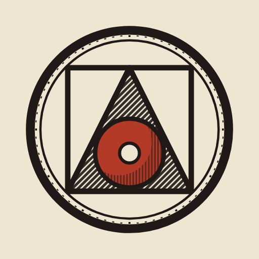

Athanor
Roguelike de combos alquímicos · An alchemical combo roguelike
Suporte
Encontrou um problema, tem uma dúvida ou uma sugestão? Escreva para gfsestudios@gmail.com. Conte o modelo do aparelho, a versão do sistema e o que aconteceu. Respondemos em português ou inglês.
Perguntas frequentes
Meu progresso some se eu trocar de aparelho? O progresso fica salvo só no aparelho, sem conta e sem nuvem. Desinstalar o jogo apaga o progresso.
Precisa de internet? Não. O Athanor funciona totalmente offline.
Como troco o idioma? Em Opções, toque no idioma. Na primeira abertura o jogo segue o idioma do aparelho.
Support
Found a problem, have a question or a suggestion? Write to gfsestudios@gmail.com. Tell us your device model, OS version and what happened. We answer in English or Portuguese.
FAQ
Does my progress carry over to a new device? Progress is stored only on your device, with no account and no cloud. Uninstalling the game deletes it.
Do I need an internet connection? No. Athanor works fully offline.
How do I change the language? In Options, tap the language. On first launch the game follows your device language.